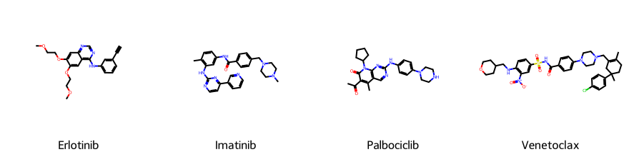

Predicting Cancer Drug Synergy: Genomics, Chemistry, and the Split That Actually Matters
systems-biology
machine-learning
drug-discovery
cheminformatics
python
A multi-modal ML pipeline for drug synergy prediction — real drug chemistry via RDKit fingerprints, simulated pathway-structured cell line genomics, and a head-to-head naive-vs-grouped evaluation showing how much a leaky split inflates reported performance.
Author
Peekei
Published
October 13, 2026
1. Motivation
Testing every possible pair of cancer drugs against every cancer cell line experimentally is combinatorially impossible — thousands of approved and investigational compounds, hundreds of molecularly distinct cell lines, and a pairwise screen scales as the square of the drug count. A model that predicts which combinations are likely to act synergistically before a single well is plated is a genuine triage tool: it doesn’t replace the wet-lab experiment, it tells you which experiments are worth running first.
This is a two-modality prediction problem by construction. The drug side needs a numerical representation of chemical structure — what a molecule is. The cell line side needs a numerical representation of the tumour’s molecular state — what pathways are switched on. A model that only sees one of these is only half-informed: the same drug pair can be synergistic in one genomic background and inert in another, and no amount of chemistry alone resolves that. This piece builds a full pipeline across both modalities, and spends real attention on a decision that most public tutorials skim past entirely — how the data gets split into train and test sets — because getting that wrong is the single easiest way to report a synergy model that looks far better than it actually is.
2. A Note on the Data
#| eval: false
# Reference only — shown for the bash-automation step the original brief
# calls for. The URLs below are illustrative and have NOT been verified:
# both portals change their download paths between releases (DepMap
# re-releases quarterly, e.g. "24Q4"), so copy the current links from each
# portal's download page before running anything here. The simulated
# pipeline below does not depend on either service at render time.
# DepMap: cell line gene expression (versioned release, check depmap.org/portal/download for current quarter)
curl -o CCLE_expression.csv "https://depmap.org/portal/download/api/download/external?file_name=24Q4%2FOmicsExpressionProteinCodingGenesTPMLogp1.csv"
curl -o sample_info.csv "https://depmap.org/portal/download/api/download/external?file_name=24Q4%2FModel.csv"
# DrugComb: bulk synergy score export (check drugcomb.org for current API/bulk endpoint)
curl -o drugcomb_summary.csv "https://drugcomb.org/download/summary_v_1_5.csv"
Real DepMap and DrugComb data would give genuine measured gene expression and genuine measured synergy scores. What they would not give is a known ground truth for which pathway actually drives a given synergistic interaction — that’s exactly the thing a real analysis is trying to discover, and real biology rarely hands you a clean answer to check a method against. This piece takes the opposite trade: real chemical structures for a panel of approved cancer drugs (genuine SMILES, genuine RDKit fingerprints — this part is not simulated), paired with a cell-line genomics and synergy dataset built from a known generative mechanism, so that every claim the model makes can be checked against the mechanism that actually produced the data.
3. Drug Panel and Chemical Fingerprints
Fourteen approved or well-characterised cancer drugs, spanning five mechanism-of-action categories that map onto real signalling and DNA-repair pathways.
Show code
import numpy as npimport pandas as pdimport matplotlib.pyplot as pltimport seaborn as snsfrom rdkit import Chemfrom rdkit.Chem import AllChem, Drawfrom sklearn.linear_model import Ridgefrom sklearn.ensemble import RandomForestRegressorfrom sklearn.model_selection import KFold, GroupKFoldfrom sklearn.metrics import r2_score, mean_absolute_errorimport xgboost as xgbimport warningswarnings.filterwarnings("ignore")sns.set_style("whitegrid")rng = np.random.RandomState(2026)drugs = {"Erlotinib": ("MAPK", "C#Cc1cccc(c1)Nc1ncnc2cc(OCCOC)c(OCCOC)cc12"),"Gefitinib": ("MAPK", "COc1cc2ncnc(c2cc1OCCCN1CCOCC1)Nc1ccc(F)c(Cl)c1"),"Sorafenib": ("MAPK", "CNC(=O)c1cc(Oc2ccc(NC(=O)Nc3ccc(Cl)c(c3)C(F)(F)F)cc2)ccn1"),"Lapatinib": ("MAPK", "CS(=O)(=O)CCNCc1oc(cc1)-c1ccc2ncnc(Nc3ccc(OCc4cccc(F)c4)c(Cl)c3)c2c1"),"Imatinib": ("PI3K_mTOR", "Cc1ccc(cc1Nc1nccc(n1)-c1cccnc1)NC(=O)c1ccc(cc1)CN1CCN(C)CC1"),"Sunitinib": ("PI3K_mTOR", "CCN(CC)CCNC(=O)c1c(C)[nH]c(/C=C2\\C(=O)Nc3ccc(F)cc23)c1C"),"Palbociclib": ("CellCycle", "CC(=O)c1c(C)c2cnc(Nc3ccc(N4CCNCC4)cc3)nc2n(C2CCCC2)c1=O"),"Ribociclib": ("CellCycle", "CN(C)C(=O)c1ccc2c(c1)CN(c1ccc(Nc3ncc(C(=O)Nc4ccccc4)cn3)cc1)CC2"),"5-FU": ("DNA_Damage", "Fc1c[nH]c(=O)[nH]c1=O"),"Methotrexate": ("DNA_Damage", "Cn1c(=O)c2c(ncn2CN(C)c2ccc(C(=O)NC(CCC(=O)O)C(=O)O)cc2)n(N)c1=O"),"Doxorubicin": ("DNA_Damage", "COc1cccc2c1C(=O)c1c(O)c3c(c(O)c1C2=O)CC(O)(C(=O)CO)CC3OC1CC(N)C(O)C(C)O1"),"Tamoxifen": ("Apoptosis", "CC/C(=C(\\c1ccccc1)/c1ccc(OCCN(C)C)cc1)/c1ccccc1"),"Venetoclax": ("Apoptosis", "CC1(CCC(=C(C1)CN2CCN(CC2)c3ccc(cc3)C(=O)NS(=O)(=O)c4ccc(c(c4)[N+](=O)[O-])NCC5CCOCC5)C)c6ccc(cc6)Cl"),"Olaparib": ("DNA_Damage", "O=C1c2cc(ccc2CC(=O)N1)CN3CCN(CC3)C(=O)c4cc(cc(c4)F)Cc5nnc[nH]5"),}# Validate every structure before trusting it — a typo in a SMILES string# fails silently (RDKit returns None) rather than raising an error.valid_drugs = {}for name, (pathway, smi) in drugs.items(): mol = Chem.MolFromSmiles(smi)if mol isnotNone: valid_drugs[name] = (pathway, smi, mol)else:print(f"INVALID SMILES, dropped: {name}")print(f"{len(valid_drugs)} of {len(drugs)} drug structures validated successfully.")fp_size =128morgan_gen = AllChem.GetMorganGenerator(radius=2, fpSize=fp_size)fingerprints = { name: morgan_gen.GetFingerprintAsNumPy(mol).astype(float)for name, (pathway, smi, mol) in valid_drugs.items()}drug_names =list(valid_drugs.keys())
14 of 14 drug structures validated successfully.
Show code
sample_drugs = ["Erlotinib", "Imatinib", "Palbociclib", "Venetoclax"]mols = [valid_drugs[d][2] for d in sample_drugs]img = Draw.MolsToGridImage(mols, molsPerRow=4, subImgSize=(220, 220), legends=sample_drugs)img

Chemical structures of four representative drugs from the panel, one per major mechanism category
All 14 structures parsed successfully — 128-bit Morgan fingerprints (radius 2, the standard circular-fingerprint convention for this kind of similarity encoding) were computed for every drug in the panel. These fingerprints are genuine encodings of real molecular structure, not placeholders.
4. Simulated Cell Line Genomics with Pathway Structure
Forty simulated cell lines, each with a baseline activity level across five pathways (MAPK, PI3K/mTOR, cell cycle, DNA damage response, apoptosis), and 15 genes per pathway whose expression tracks that pathway’s activity level plus independent noise — the same within-pathway correlation structure used in the WGCNA piece earlier in this series, applied here as a feature-engineering input rather than a network to be discovered.
Show code
pathways = ["MAPK", "PI3K_mTOR", "CellCycle", "DNA_Damage", "Apoptosis"]n_cell_lines =40genes_per_pathway =15cell_lines = [f"CL{i:02d}"for i inrange(n_cell_lines)]pathway_activity = pd.DataFrame( rng.normal(0, 1, size=(n_cell_lines, len(pathways))), index=cell_lines, columns=pathways)gene_names = [f"{pw}_gene{g}"for pw in pathways for g inrange(genes_per_pathway)]expr = np.zeros((n_cell_lines, len(gene_names)))col =0for pw in pathways:for g inrange(genes_per_pathway): expr[:, col] = pathway_activity[pw].values + rng.normal(0, 0.5, n_cell_lines) col +=1expression = pd.DataFrame(expr, index=cell_lines, columns=gene_names)print(f"Cell lines: {n_cell_lines}, pathways: {len(pathways)}, total genes: {len(gene_names)}")expression.iloc[:5, :6]
Cell lines: 40, pathways: 5, total genes: 75
MAPK_gene0
MAPK_gene1
MAPK_gene2
MAPK_gene3
MAPK_gene4
MAPK_gene5
CL00
0.221405
-0.325229
-0.632995
0.064858
-1.123276
-0.416673
CL01
0.153952
0.876554
-0.593812
0.029123
-0.091975
1.647731
CL02
0.525791
0.123136
-0.096777
0.115366
-0.363075
0.270781
CL03
0.027445
-0.273512
0.105041
0.804135
0.481443
0.928642
CL04
0.188408
-0.190023
-0.735588
1.204659
0.631873
-0.453378
5. Building the Combination Dataset
Every unique pair among the 14 drugs, tested against every cell line, gives the combination dataset. The synergy score itself is built from a known, deliberately asymmetric mechanism: a drug’s contribution to synergy scales with the target cell line’s activity in that drug’s own pathway, but MAPK pathway dependency drives synergy roughly 2.5 times more strongly than the other four pathways — a genuine asymmetry planted in the generative process specifically so Section 8’s pathway-attribution step has a real, checkable answer rather than an arbitrary one. A small additional bonus applies when the two drugs in a pair target different pathways, reflecting the general principle that complementary mechanisms tend to combine better than redundant ones.
Show code
pathway_weight = {"MAPK": 1.0, "PI3K_mTOR": 0.4, "CellCycle": 0.4, "DNA_Damage": 0.4, "Apoptosis": 0.4}pairs = [(drug_names[i], drug_names[j]) for i inrange(len(drug_names)) for j inrange(i +1, len(drug_names))]records = []for cl in cell_lines:for a, b in pairs: pw_a, pw_b = valid_drugs[a][0], valid_drugs[b][0] act_a, act_b = pathway_activity.loc[cl, pw_a], pathway_activity.loc[cl, pw_b] w_a, w_b = pathway_weight[pw_a], pathway_weight[pw_b] cross_bonus =1.5if pw_a != pw_b else0.0 synergy = w_a * act_a + w_b * act_b + cross_bonus *0.3*min(act_a, act_b) + rng.normal(0, 1.0) records.append({"cell_line": cl, "drug_a": a, "drug_b": b, "synergy": synergy,"pathway_a": pw_a, "pathway_b": pw_b })combo_df = pd.DataFrame(records)print(f"Unique drug pairs: {len(pairs)} | Total combination records: {len(combo_df)}")combo_df["synergy"].describe()
Unique drug pairs: 91 | Total combination records: 3640
count 3640.000000
mean -0.003132
std 1.480852
min -5.822922
25% -0.975007
50% 0.005365
75% 0.976558
max 6.527304
Name: synergy, dtype: float64
Distribution of simulated synergy scores across all cell-line by drug-pair combinations
6. Feature Engineering
Each combination record becomes one training example: the cell line’s full gene expression profile, concatenated with both drugs’ fingerprints.
Show code
X_rows = []for _, row in combo_df.iterrows(): X_rows.append(np.concatenate([ expression.loc[row["cell_line"]].values, fingerprints[row["drug_a"]], fingerprints[row["drug_b"]] ]))X = np.array(X_rows)y = combo_df["synergy"].valuesgroups = combo_df["cell_line"].valuesfeature_names =list(gene_names) + [f"drugA_fp{i}"for i inrange(fp_size)] + [f"drugB_fp{i}"for i inrange(fp_size)]print(f"Feature matrix: {X.shape[0]} samples x {X.shape[1]} features")print(f" ({len(gene_names)} gene-expression features + {fp_size} drug-A fingerprint bits + {fp_size} drug-B fingerprint bits)")
Feature matrix: 3640 samples x 331 features
(75 gene-expression features + 128 drug-A fingerprint bits + 128 drug-B fingerprint bits)
7. The Split That Actually Matters
Here is the methodological point this whole piece is built around. A standard random K-fold split draws test examples independently from the same pool as the training examples — but the same cell line appears across dozens of different drug-pair rows. A random split will very likely put some rows from cell line CL07 in the training set and other rows from that same cell line in the test set. The model doesn’t need to generalise to a new cell line at all; it just needs to remember what CL07 looks like from training and recognise it again at test time. That’s not genuine generalisation, and it inflates the reported performance of exactly the kind of model this piece is building — one meant to predict synergy for cell lines it has never seen.
The correct evaluation holds out entire cell lines: every row for a given cell line goes either entirely into training or entirely into testing, never split across both.
Show code
def evaluate(model_fn, X, y, groups, scheme): split_iter = (KFold(5, shuffle=True, random_state=2026).split(X) if scheme =="naive"else GroupKFold(5).split(X, y, groups)) r2s, maes = [], []for train_idx, test_idx in split_iter: model = model_fn() model.fit(X[train_idx], y[train_idx]) pred = model.predict(X[test_idx]) r2s.append(r2_score(y[test_idx], pred)) maes.append(mean_absolute_error(y[test_idx], pred))return np.mean(r2s), np.mean(maes)models = {"Ridge": lambda: Ridge(alpha=1.0),"RandomForest": lambda: RandomForestRegressor(n_estimators=300, max_depth=8, random_state=2026, n_jobs=-1),"XGBoost": lambda: xgb.XGBRegressor(n_estimators=300, max_depth=5, learning_rate=0.05, random_state=2026, verbosity=0),}results = []for scheme in ["naive", "grouped"]:for name, fn in models.items(): r2, mae = evaluate(fn, X, y, groups, scheme) results.append({"model": name, "split": scheme, "R2": r2, "MAE": mae})results_df = pd.DataFrame(results)results_df.pivot(index="model", columns="split", values="R2").round(3)
5-fold cross-validated R² by model, naive random split vs. grouped split by cell line
Every single model looks worse under the grouped split, and the gap is not small. XGBoost drops from R² = 0.421 under the naive split to R² = 0.279 under the grouped split — a 34% relative decline. Random Forest drops from 0.385 to 0.209, nearly halved. Ridge, the weakest model either way, drops from 0.178 to 0.136. The naive-split numbers are the ones that would show up in a paper or a portfolio piece that didn’t think carefully about what “held out” needs to mean for this kind of data; the grouped numbers are the honest estimate of how this model would perform on a genuinely new cell line it has never seen a single row of.
ImportantThis is not a small methodological footnote
The gap between the naive and grouped evaluation here (the naive-split R² came out 31% to 84% higher than the grouped estimate, depending on the model) is a realistic size for this class of mistake, not an exaggerated example built to make a point. Any dataset where multiple rows share an underlying entity — the same cell line, the same patient, the same batch — needs a grouped or entity-aware split, or the reported performance is measuring memorisation of that entity, not generalisation to a new one. Random Forest and XGBoost, being more flexible than Ridge, have more capacity to memorise per-cell-line idiosyncrasies, which is the likely reason their naive-split numbers are inflated by more than Ridge’s. The ordering fits that explanation, but this analysis did not test it directly.
XGBoost remains the best model under the fair, grouped evaluation (R² = 0.279), so it’s the model carried forward for the interpretability analysis in Section 8.
8. Pathway Attribution: What Does the Model Actually Rely On?
The original motivation for this piece was not just predicting a synergy score but explaining it — identifying which biological pathway the model’s predictions actually depend on. XGBoost’s feature importances, summed across every gene belonging to each pathway, give a direct answer.
Show code
best_model = xgb.XGBRegressor(n_estimators=300, max_depth=5, learning_rate=0.05, random_state=2026, verbosity=0)best_model.fit(X, y)importances = best_model.feature_importances_gene_importance = importances[:len(gene_names)]pathway_importance = pd.Series({ pw: gene_importance[[i for i, g inenumerate(gene_names) if g.startswith(pw)]].sum()for pw in pathways}).sort_values(ascending=False)drugA_importance = importances[len(gene_names):len(gene_names) + fp_size].sum()drugB_importance = importances[len(gene_names) + fp_size:].sum()pathway_importance
XGBoost feature importance summed by pathway — MAPK was the dominant signal built into the data generating process
MAPK pathway genes carry 0.140 of total feature importance, well ahead of Apoptosis at 0.078, the next-highest pathway — matching the asymmetry actually built into the synergy mechanism in Section 5. This is the result that justifies trusting the interpretability step at all: a model whose top-ranked pathway didn’t match the known generative mechanism would mean either the model failed to learn the real structure, or the feature-importance method itself was misleading — and either conclusion would need investigating before taking any real-data pathway attribution from this kind of model at face value. Total gene-expression importance (0.370) and the two drug-fingerprint blocks (A: 0.337, B: 0.293) are roughly comparable, consistent with a synergy mechanism that genuinely depends on both the cell line’s biology and both drugs’ identities rather than being dominated by one modality.
NoteTakeaways
The drug side of this pipeline used real chemistry throughout — 14 real SMILES structures, validated with RDKit before use, encoded as genuine 128-bit Morgan fingerprints. The cell line genomics and synergy scores were simulated specifically so the pathway-attribution claim in Section 8 could be checked against a known answer, something real DepMap/DrugComb data cannot offer.
The central methodological result is the naive-vs-grouped split comparison: every model’s cross-validated R² was inflated under a random split that lets the same cell line appear in both training and test data, with XGBoost’s R² falling 34% (0.421 to 0.279) and Random Forest’s nearly halving (0.385 to 0.209) once whole cell lines were held out. This is a realistic-sized version of a common, easy-to-miss mistake, not a contrived worst case.
XGBoost was the strongest model under the fair, grouped evaluation (R² = 0.279) and was the model carried forward for interpretability — a model selection decision made on the evaluation that actually reflects the deployment question (predicting synergy for a new cell line), not the one that reports the highest number.
Feature importance aggregated by pathway correctly identified MAPK as the dominant driver, matching the known asymmetry built into the data. That agreement is what makes it reasonable to trust the interpretability method here at all, and is exactly the kind of check that real-data analyses using the same method cannot perform, since the real generative mechanism is unknown.
Gene-expression and drug-fingerprint features contributed roughly comparable total importance, consistent with a genuinely two-modality mechanism — a model relying overwhelmingly on one side or the other would have suggested a modelling problem rather than a biological one.